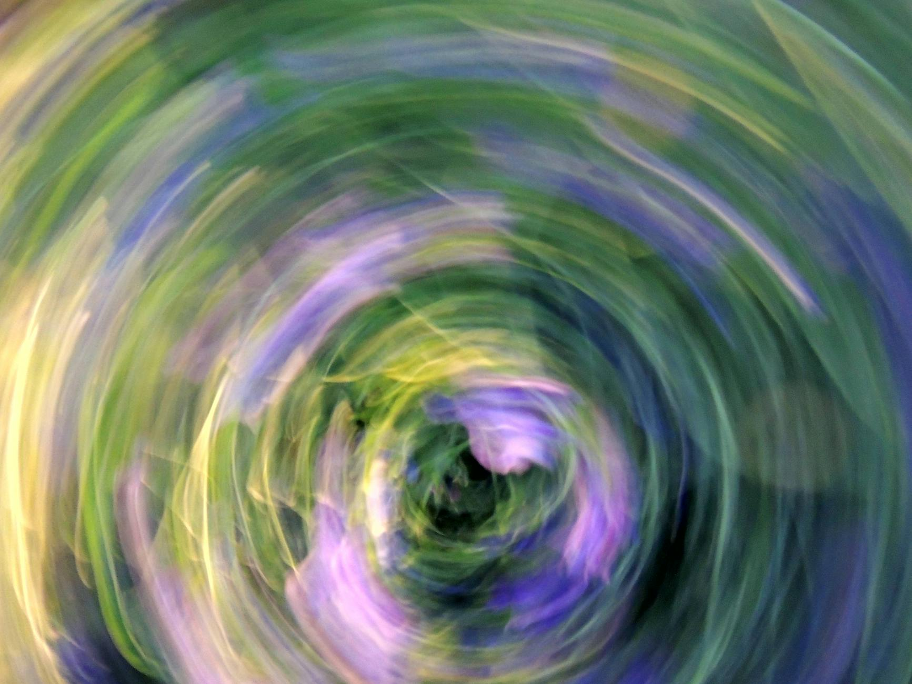

一、数字有多荒唐，你可能还没意识到
我们先做一个参照系。
2000年，互联网泡沫顶峰时期，全球最高单季度VC总量大约是350亿美元。AI赛道集中度，从来没超过30%。
Q1 2026 关键数据
2026年Q1，单季度VC总量是3000亿美元。是互联网泡沫峰值的将近9倍。AI占其中81%。
这一个季度的风险投资，相当于2025年全年的70%。
增速：对比2025年同期，增长了150%。
这种增速不叫"行业热"。
这叫核裂变。
而且这还只是私募市场。去年1月，DeepSeek出现的那一天，微软一天之内蒸发了4400亿美元市值。
一天。4400亿。这揭示了一个现实：现在的AI估值，是建立在对未来某个时间点的AGI预期上的，而不是建立在今天的收入上的。
这就是为什么它危险，也是为什么它必然继续。
二、OpenAI的1220亿：是融资，还是建国？
我们来单独解剖这笔钱。
2026年3月31日，OpenAI宣布完成了历史上最大的单笔私募融资：1220亿美元，估值8520亿美元。

谁投了这么多钱？
- Amazon：500亿（其中350亿有条件——需要OpenAI上市或达成AGI里程碑才触发）
- Nvidia：300亿
- SoftBank：300亿
- 剩余来自Andreessen Horowitz、BlackRock、Sequoia、TPG、T. Rowe Price等顶级机构
- 散户：30亿——OpenAI历史上第一次向个人投资者开放
这笔钱拿来做什么？
Sam Altman的原话是："建设智能本身的基础设施。"
翻译成人话：建算力、建数据中心、建核电厂合作，每周建设"一千兆瓦的基础设施"。
OpenAI不再只是一家做模型的公司。它在用融来的钱建造一个新的工业基础层——就像100年前的钢铁和铁路，50年前的高速公路网络，20年前的互联网骨干网。
它的Q4 2026 IPO目标估值：1万亿美元。
如果达到，OpenAI将成为人类历史上从创立到进入万亿市值俱乐部速度最快的公司。
而Anthropic同期估值3800亿，年化收入140亿，Claude Code年化25亿，四倍于年初。xAI估值2300亿，随即被SpaceX收购。Waymo拿了160亿。
四家公司，合计1880亿，占全球VC的65%。
三、其他创业公司正在发生什么
四家公司拿走65%之后，剩下的35%给谁？
给剩下的5996家创业公司。
这不是笑话。
当81%的资本流向AI，其他赛道的创业公司正在经历一场没有人报道的饥荒。
生物科技。金融科技。企业SaaS。消费互联网。这些曾经构成创投生态基础的赛道，现在全都在抢同一个变小了的蛋糕。
⚠ 一家VC合伙人私下说："现在见非AI项目，我会在心里先打三折，然后再问他们为什么不用AI解决这个问题。"
这种死法没有新闻，没有发布会，没有告别邮件。只有某天你发现，那个网站打不开了。
四、这是泡沫吗？
这是整篇文章最难回答的问题，我打算认真答。
多方论据：
Anthropic年化收入140亿美元，同比增长40%。这不是空气，这是真实的营收。OpenAI的B2C和B2B产品每月有数亿活跃用户。AI正在真实渗透医疗（5秒语音诊断心衰）、法律（合同审查自动化）、编程（代码生成提效）等领域。
空方论据：
MIT研究显示，95%的企业在生成式AI上的投入ROI为零。不是负数，是零。
投入与回报的鸿沟
每投出一块钱的基础设施，能收回来的只有两毛四。
这不是传统意义上的泡沫。传统泡沫是人们对一个不存在的东西押注。AI的能力是真实的。但这是一种结构性高估的真实产品——人们对AI能力进展速度的预期，可能比实际快了2-5年。
当预期和现实的时间差暴露出来，不是崩溃，是修正。修正可能很残酷。但这个行业不会消失。
五、这场游戏，只有美国人在玩
在全球3000亿美元的VC里，美国拿走了2500亿，占83%。
更关键的是模型层的数字：美国生产了40个AI基础模型，中国15个，整个欧洲加起来3个。
这不只是一场AI竞赛。这是一场谁来定义"智能的基础设施标准"的地缘博弈。就像100年前谁的铁路规格成为全球标准，50年前谁的操作系统成为全球标准。
目前的答案，几乎是确定的：美国。
中国在机器人、制造业AI集成、推理成本优化上有独特优势——但这是另一条赛道。两国在跑不同的AI竞赛。问题是，哪场竞赛更重要？
六、如果你在这个局里，现在怎么办
如果你是创业者：
首先承认一个现实：你不可能打赢OpenAI，也打不赢Anthropic。在基础模型层和它们竞争，是一场你已经输了起跑线的比赛。
你的机会在两个地方：
- 成为AI基础设施的受益者，而不是竞争者。在AI能力之上建应用，就像2000年代在互联网上建电商一样。这一层很快会出现真正的巨头。
- 找到大模型没有商业动机进入的垂直领域。那些规模小到让OpenAI销售团队觉得"不值得做"的B2B场景，往往才是创业者真正的空间。
如果你是投资人：
非AI项目的风险溢价已经被市场严重误定价。能继续获得融资的非AI公司，要么有极强的防御壁垒，要么有不可替代的网络效应，要么在一个AI暂时无法渗透的监管环境里。
还有一种玩法：等。等AI基础设施这一轮资本过度投入的矫正出现，届时会有非常优质的非AI公司以极低的估值出现在市场上。逆向投资在任何时代都是有效的。在AI泡沫期，尤其如此。
真正的问题不是AI会不会成功。是成功之后，谁能从中分到一杯羹？
结语：最后一个问题
2026年Q1，四家公司，1880亿美元。
这是人类有史以来最大规模的资本赌注。
他们在赌一件事：智能会变成基础设施，就像电力、道路、互联网一样——成为每个行业的必需品，而不是选项。
如果他们赌对了，今天的1220亿看起来会像1990年代买Amazon股票一样廉价。
如果他们赌错了，或者对了但快了5年——
这笔钱会成为历史上最昂贵的学费。
但有一件事是确定的，不管对错：
等这场赌局尘埃落定的那一天，你我所在的世界，已经永久改变了。